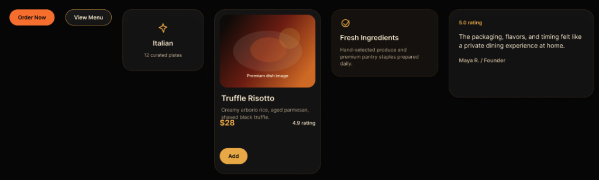
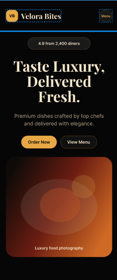

Velora Bites
A premium restaurant experience designed around elegance, storytelling and modern hospitality.

Digital Fine Dining.
Project Vision
To translate the sensory experience of a Michelin-star dining room into a digital interface. The platform must feel as meticulously plated and refined as the cuisine it presents.
Target Audience
Discerning gourmands, high-net-worth individuals, and food enthusiasts seeking an uncompromising, seamless premium food ordering experience.
Business Goals
Elevate the brand identity above typical fast-casual delivery apps, driving higher average order values through a luxurious, trustworthy digital presence.
Restaurant Positioning
Positioned as a digital-first luxury kitchen where convenience does not compromise elegance or perceived quality.
The language of luxury.
Luxury is defined by what is removed, not what is added. The visual identity relies on exquisite restraint, allowing the food photography to act as the primary brand ambassador.
Typography
A sophisticated high-contrast serif typeface establishes authority and elegance for headings, paired with a highly legible geometric sans-serif for menus and UI elements.
Color Palette
Deep, immersive black surfaces absorb distraction. Warm, ambient gold accents and soft orange gradients evoke the feeling of candlelight and premium hospitality.
Visual Hierarchy & Spacing
Extravagant use of negative space. Content breathes freely, mimicking the physical distance between tables in a luxury dining room. The minimal navigation never intrudes on the imagery.
Crafting the standard.
The design process began with extensive competitive analysis of physical high-end restaurant menus rather than digital apps. We sought to capture the tactile feel of premium cardstock and gold foil.
- Research: Auditing physical luxury hospitality touchpoints.
- Wireframes: Establishing a grid that prioritizes vast imagery over dense text arrays.
- Visual Language: Developing a tokenized system for the Gold/Black aesthetic.
- Component System: Building reusable UI cards that maintain their elegance across any data payload.
Uncompromised on every screen.
The Desktop Panorama
Expansive imagery, horizontal scrolling carousels, and highly refined typographic scaling. The desktop view feels like an interactive editorial spread where high-fidelity food photography dominates the visual hierarchy.
Through the careful use of CSS Grid and massive horizontal padding, the experience mimics reading a physical luxury hospitality brochure on a wide mahogany table.

The Mobile Concierge
Touch targets are expanded for thumb ergonomics. Navigation collapses into an elegant minimal overlay. The luxury feel is preserved through strict adherence to the golden ratio in vertical spacing.
The Devil in the Details.
Tactile Digital Feedback
Hover states in a luxury context don't simply change color; they reveal subtle, warm inner shadows and gentle up-scales that mimic physical interaction. The primary Call-to-Action commands attention without screaming, relying on soft easing curves to feel natural and deliberate rather than sudden and mechanical.
The Ingredients.
- Luxury Landing Page: Immediate brand immersion upon load.
- Responsive Layout: Flawless adaptation across all device viewports.
- Menu Highlights: Curated dishes presented like gallery artwork.
- Food Cards: Component-driven architecture for scalable menus.
- Testimonials: Trust-building social proof wrapped in elegant typography.
- Premium CTA: A unified hierarchy for order flows.
- Micro Interactions: Deliberate, smooth feedback loops.
- Modern UI System: Fully tokenized variables for rapid iteration.
Built to perform.
A luxury experience must be fast. We rejected heavy JS frameworks in favor of semantic HTML and highly optimized CSS, utilizing modern CSS Grid and Flexbox for complex, asymmetrical layouts.
The animation system relies on CSS transitions and hardware-accelerated transforms (`translate3d`, `scale`) ensuring 60fps performance even on older mobile devices. Reusable design tokens govern the strict color and spacing logic.
The Balancing Act
- Aesthetics vs. Usability: Ensuring that the ultra-minimalist, high-contrast design did not negatively impact legibility or accessibility for ordering functionality.
- Typography Scaling: Managing fluid typography so that the massive serif headlines retained their dramatic impact on mobile screens without breaking word-wraps.
- Asset Performance: Loading high-fidelity, premium food photography while maintaining lightning-fast time-to-interactive metrics.
The Outcome
- Visual Identity: Established a distinct, highly recognizable premium digital presence.
- Responsiveness: Delivered a seamless, app-like ordering experience on mobile devices.
- Scalability: The component architecture allows the restaurant to easily add hundreds of menu items without breaking the layout.
- Presentation: Elevated the standard for digital hospitality interfaces.
Lessons Learned
True luxury in UI design comes from restraint. It is tempting to over-animate or over-decorate, but allowing high-quality photography and excellent typography to speak for themselves yields a much more confident and expensive-feeling product. The negative space is just as important as the content itself.
Future Improvements
Looking ahead, the platform is poised to integrate a seamless Table Reservation System, full Online Ordering capabilities with real-time tracking, and a bespoke Restaurant CMS. We also plan to explore AI Recommendations to suggest wine pairings based on cart contents, further elevating the digital concierge experience.